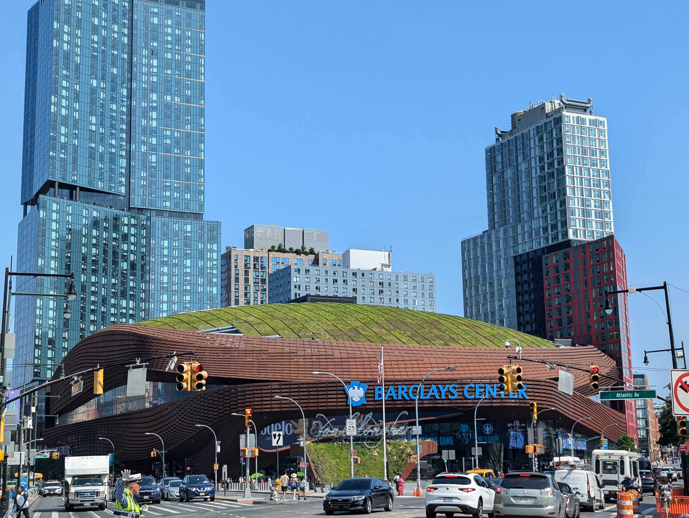

Project
Skills Learnt:
| Soft Skills | Technical Skills |
|---|---|
| Communication - from networking with software engineers from all backgrounds and ages at Google and start up companies | Learning how to code using React - a framework for JS |
| Time Management - I had to make schedules and timetables to be able to fit in work and have fun at the same time, to make the most out of the day | Enhanced exisiting HTML/JS/CSS knowledge by making this website |
| Problem Solving - although accompanied, I decided to navigate through the city to our destinations rather than relying on somebody else | Learnt about different career pathways into various technological companies, the skills needed and how career progression works from a startup to a larger organisation like Google |
| Navigation - Being able to travel around is essential and what better way to try leading the navigation on trips in a foreign country right! Adapting to the new subway system in NY compared to the one in London helped me to think quicker and more logically (somehow) because I had to quickly find the route and get on the right train to get to places on time. | Python - Although we learnt the basics in school I managed to learn more on this trip - especially focusing on classes and objects and learnt how to make games with added functionality - i.e. instead of moving left and right, I could enable the robot to jump and turn and let the grid be an adjustable size depending on input without changing the game at all. |
Extra Information gathered
- At the startup there were much fewer employees (evidently) and less people were working onsite - most worked remotely. They had to hire more private contractors to help with the code mainly because they only had two main software engineers - one for the frontend and one for the backend.
- Whereas in a bigger company like Google the building was evidently much larger and nicer with many more benefits (i.e. free food, massages, game rooms...etc) and while the teams were around the same size as those in the startup, there were a few hundred more, so while any work contributed was definitely worthwhile - it could be estimated that the work in the startup had a much larger initial impact.
New French phrases
Images


